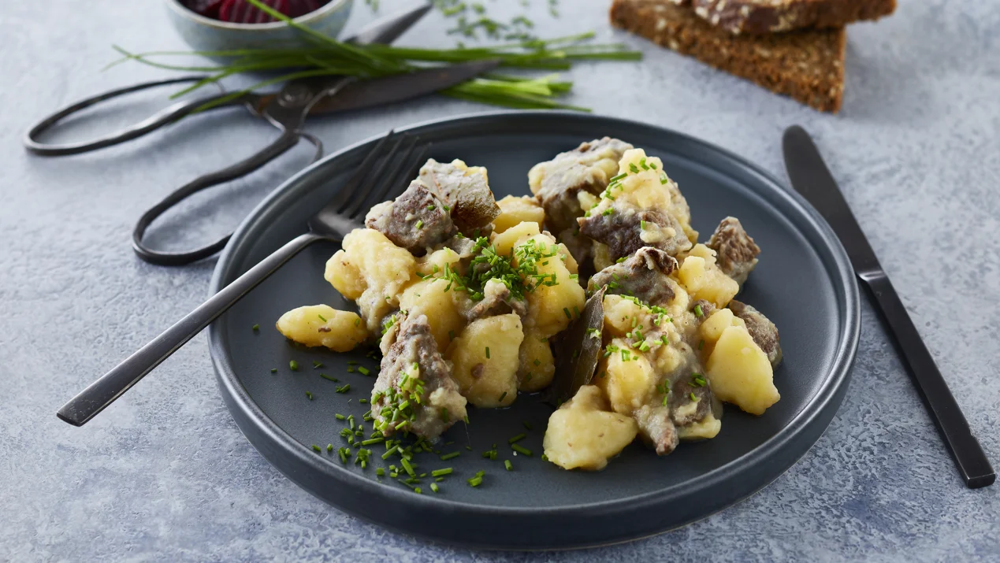

Home
Skipperlabskovs

Skipperlabskovs is a traditional dish in Denmark, which is
often made with leftover cowmeat from the day before.
It is served with rhybread.
Ingredients
- chopped cowmeat
- potatoes
- butter
- onions
Steps
- Melt the butter in a pot
- Put the meat, water and onion in the pan and cover with a lid
- Let is simmer for 1,5 hours
- Add the potatoes
- Let simmer lightly for 1 hour
- Serve while hot on rhybread